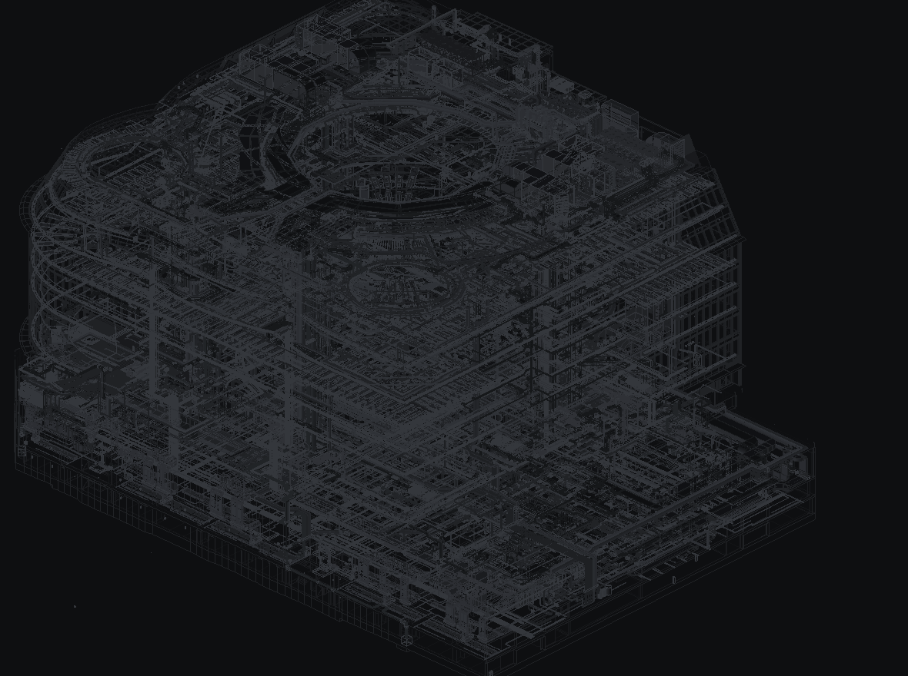
Mostafa
Gomaa
Gomaa
BIM-Koordinator TGA
BIM-Koordination · Modell-QA/QC · BIM-Standards · ACC · Automatisierung
Berlin · Portfolio
Akt 01 — Profil
Profil
Ich koordiniere multidisziplinäre TGA-Modelle, entwickle BIM-Standards, sichere die Modellqualität, löse Koordinationskonflikte und steuere den Informationsaustausch über Autodesk Construction Cloud.
Zusätzlich entwickle ich praxisnahe Revit-Automatisierungswerkzeuge, die wiederkehrende Arbeit beseitigen, die Konsistenz erhöhen und die BIM-Abwicklung unterstützen.
8
Jahre TGA-Erfahrung
2+
Jahre in Deutschland
6
Gewerke koordiniert
Werkzeuge
Revit · Navisworks · Autodesk Construction Cloud · Dynamo · Revit API
Sprachen
Arabisch (Muttersprache) · Deutsch · Englisch
Name
Mostafa Gomaa
Fachbereich
BIM-Koordinator TGA
Ort
Berlin
Blatt
02 / 17
Arbeitsweise
Sieben Schritte, eine Schleife. Der Standard erzeugt die Vorlage, die Vorlage erzeugt die Modelle — und die Automatisierung führt zurück in den Standard.
Standard
01
Vorlage
02
Produktion
03
QA / QC
04
Koordination
05
CDE
06
Automatisierung
07
Rücklauf
Ich verantworte alle sieben Schritte. Der Standard legt die Regeln fest, die Vorlage setzt sie durch, die Prüfung deckt Abweichungen auf — und jede Abweichung, die sich wiederholt, wird zur nächsten Regel.
Name
Mostafa Gomaa
Fachbereich
BIM-Koordinator TGA
Ort
Berlin
Blatt
03 / 17
Akt 02 — Ablauf
Typischer BIM-Koordinationsablauf
Vom Projektaufsatz bis zur Übergabe — zwölf Schritte, die ich in jedem Projekt gleich führe.
Aufsetzen und Prüfen
01
BAP / AIA
02
Revit-Projektaufbau
03
Gemeinsame Koordinaten
04
Modellprüfung
05
Navisworks
06
Kollisionsprüfung
Koordinieren und Liefern
07
ACC-Issues
08
Koordinationstermin
09
Konfliktklärung
10
Freigabe
11
IFC-Export
12
Übergabe
Die Schritte 04 bis 09 wiederholen sich in jedem Koordinationszyklus. Schritt 01 bis 03 lege ich einmal fest — und halte sie über die gesamte Projektlaufzeit stabil.
Name
Mostafa Gomaa
Fachbereich
BIM-Koordinator TGA
Ort
Berlin
Blatt
04 / 17
Akt 03 — Kontrolle
Geschäfts- und Bürogebäude, Berlin
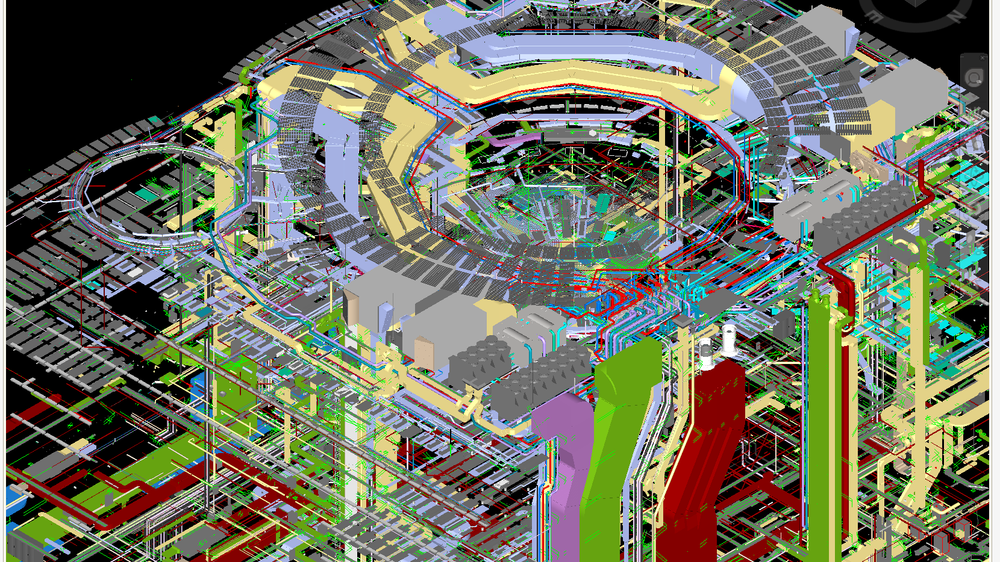
Föderiertes TGA-Gesamtmodell aller Gewerke, Draufsicht.
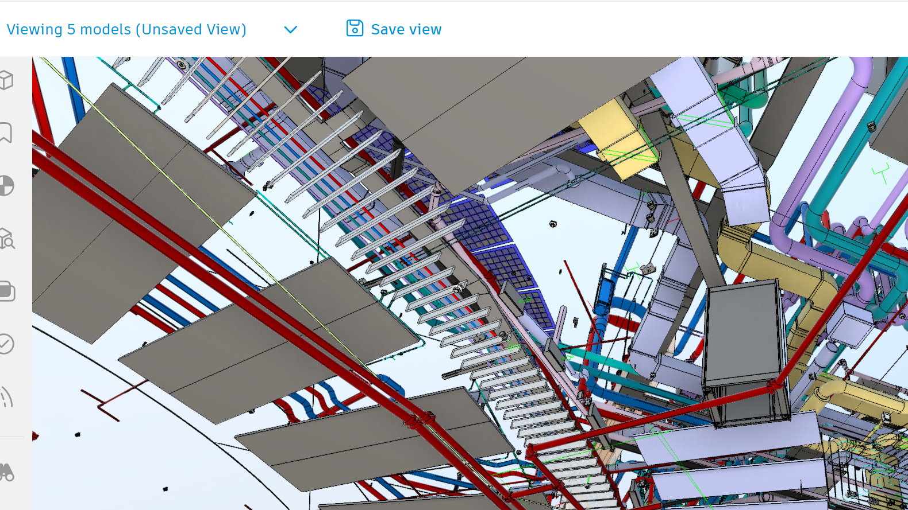
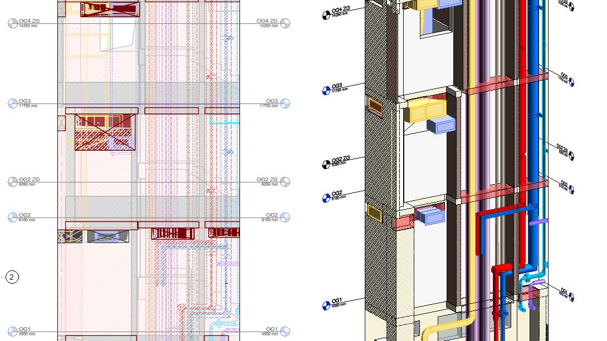
Modellkoordination in der CDE.
Schachtdetail — 2D und 3D aus einem Modell.
- Projekttyp
- Geschäfts- und Bürogebäude, Berlin-Mitte
- Leistungsphase
- LPH 5 — Ausführungsplanung
- Gewerke
- Lüftung · Heizung / Kälte · Sanitär · Brandschutz · Elektro · MSR (6)
- Föderiertes Modell
- Fachmodelle je Gewerk, verknüpft über gemeinsame Koordinaten
- Koordinationsumfang
- Modellprüfung · Kollisionsprüfung · Issue-Verfolgung · Freigabe
- CDE-Ablauf
- Autodesk Construction Cloud — Koordination, Datenaustausch, Freigabe
- Austauschformate
- RVT · IFC · NWC
- Meine Rolle
- BIM-Koordination und -Administration TGA
Name
Mostafa Gomaa
Fachbereich
BIM-Koordinator TGA
Ort
Berlin
Blatt
05 / 17
Vom Rohbau zum System
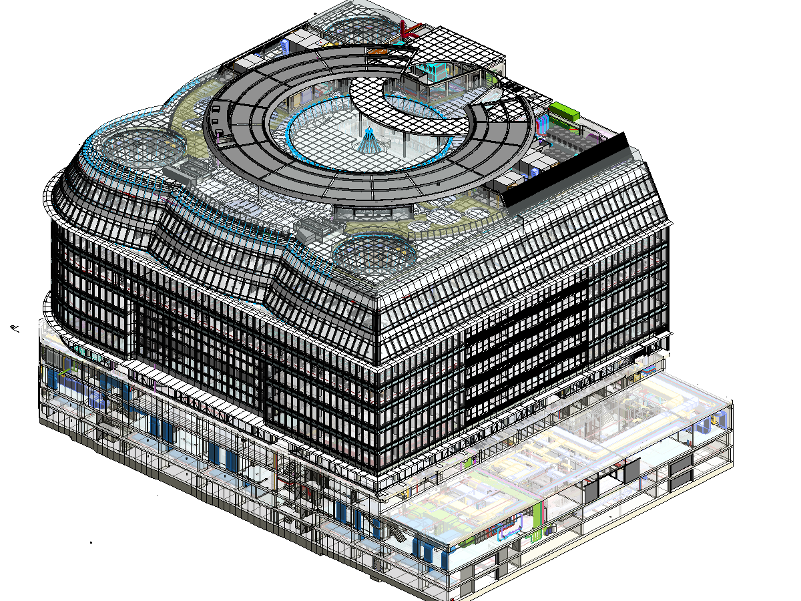
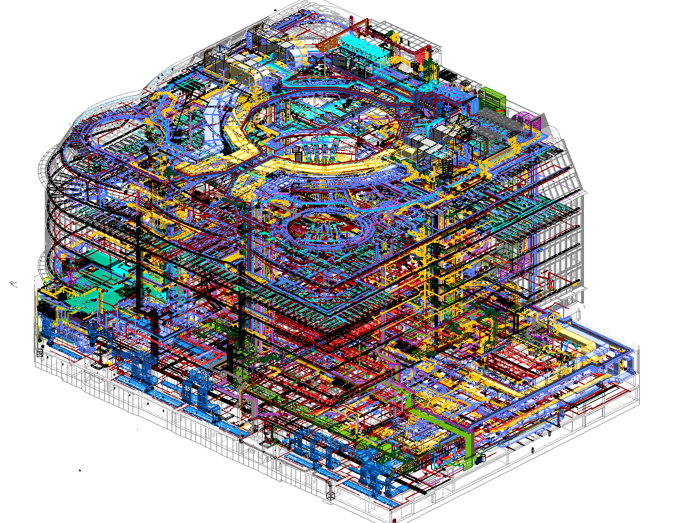
Architektur-Referenzmodell, verknüpft.
Dieselbe Kubatur mit der vollständigen Technischen Gebäudeausrüstung.
Zwischen diesen beiden Bildern liegt die eigentliche Arbeit: Struktur, Regeln und Prüfung.
Name
Mostafa Gomaa
Fachbereich
BIM-Koordinator TGA
Ort
Berlin
Blatt
06 / 17
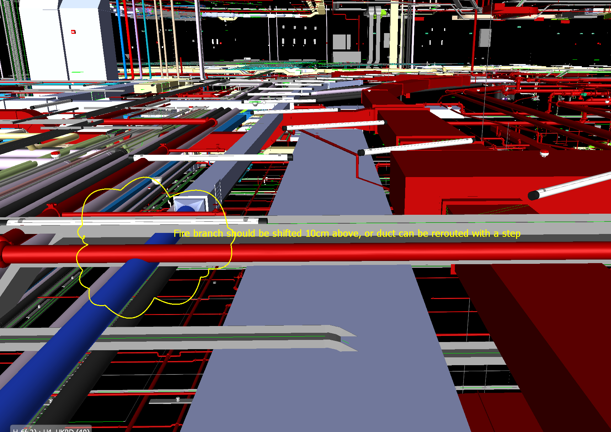
Problem
Brandleitung kreuzt die Lüftungstrasse im Untergeschoss.
Entscheidung
„Brandleitung 100 mm höher legen — oder Kanal mit Versatz umführen."
Ergebnis
Nach Prüfung des verfügbaren Raums und der Systemzwänge als umsetzbare Lösung an das zuständige Gewerk übergeben.
Kollision Brandleitung / Lüftungskanal · Untergeschoss 4
Name
Mostafa Gomaa
Fachbereich
BIM-Koordinator TGA
Ort
Berlin
Blatt
07 / 17
Kollisionsprüfung
Prüfläufe nach Gewerkepaar und Geschoss, mit eigenen Ausnahmeregeln gegen Fehlmeldungen.
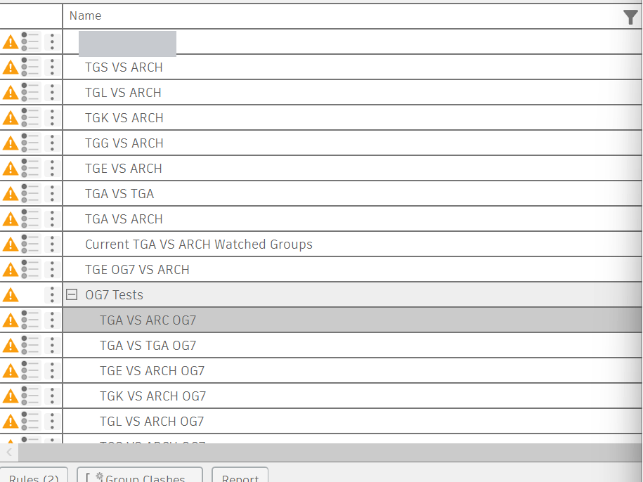
Ein Prüflauf je Gewerkepaar
Testgruppen je Geschoss
Problem
Ungefilterte Prüfläufe erzeugen Trefferlisten, die im Koordinationstermin niemand abarbeiten kann.
Entscheidung
Prüfmatrix je Gewerkepaar, zusätzliche Testgruppen je Geschoss, eigene Regeln gegen bekannte Fehlmeldungen.
Ergebnis
Prüfberichte in einer Größe, die im Termin besprochen und nachverfolgt werden kann.
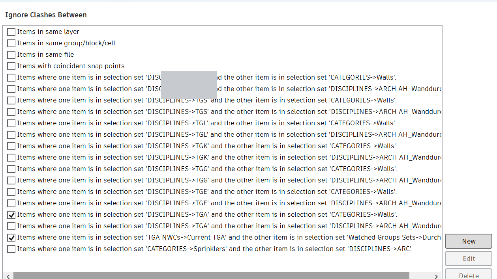
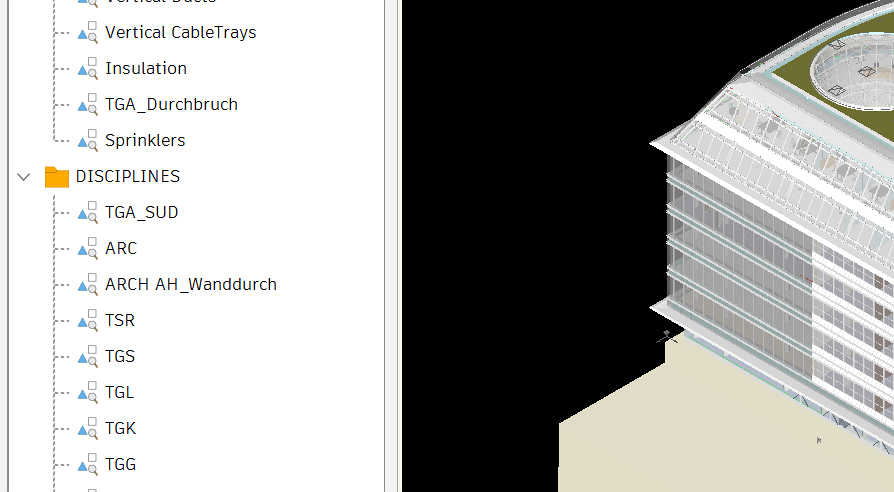
Suchsets nach Kategorie, Gewerk und Bauteilgruppe — die Grundlage jedes Prüflaufs.
Name
Mostafa Gomaa
Fachbereich
BIM-Koordinator TGA
Ort
Berlin
Blatt
08 / 17
CDE-Administration
Ordnerstruktur, Freigabesets und Modellstände liegen in meiner Verantwortung.
6
6
6
6
6
6
6
6
14
7
14
7
14
3
FebruarMärzAprilMaiJuniJuli
31.01.202631.07.2026
14 TGA-Pakete zwischen Januar und Juli 2026. Zahl über dem Punkt: enthaltene Modelle.
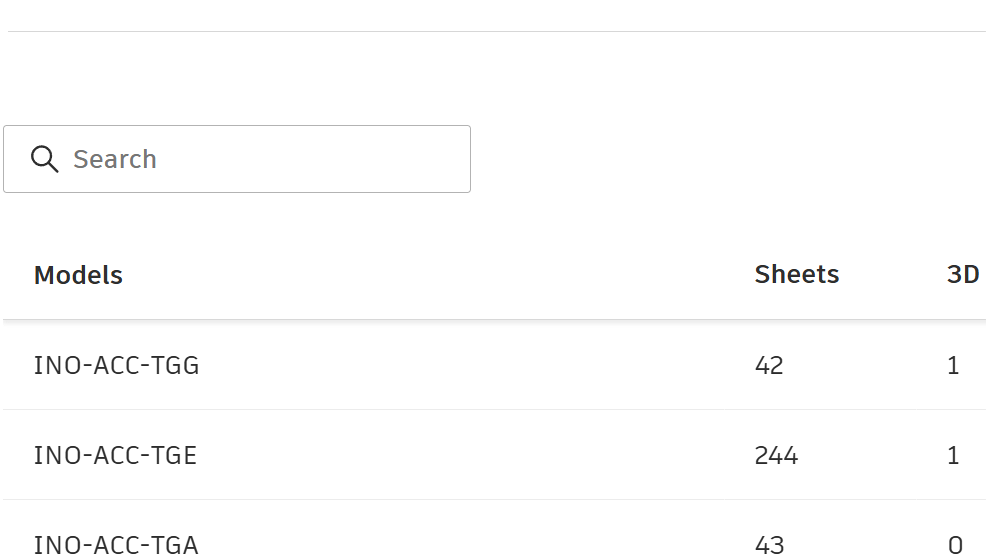
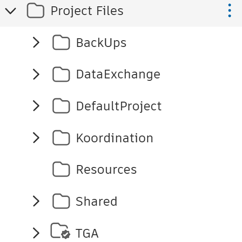
Problem
Verteilte Modellstände und unklare Freigaben führen zu Planung auf veralteten Daten.
Entscheidung
Getrennte Bereiche für Koordination, Datenaustausch und Freigabe; je Gewerk ein festgelegtes Freigabeset.
Ergebnis
Ein nachvollziehbarer Modellstand — 14 TGA-Pakete zwischen Januar und Juli 2026, freigegeben über Freigabesets je Gewerk.
14
TGA-Pakete
in sechs Monaten
in sechs Monaten
244
Pläne im größten
Fachmodell
Fachmodell
Name
Mostafa Gomaa
Fachbereich
BIM-Koordinator TGA
Ort
Berlin
Blatt
09 / 17
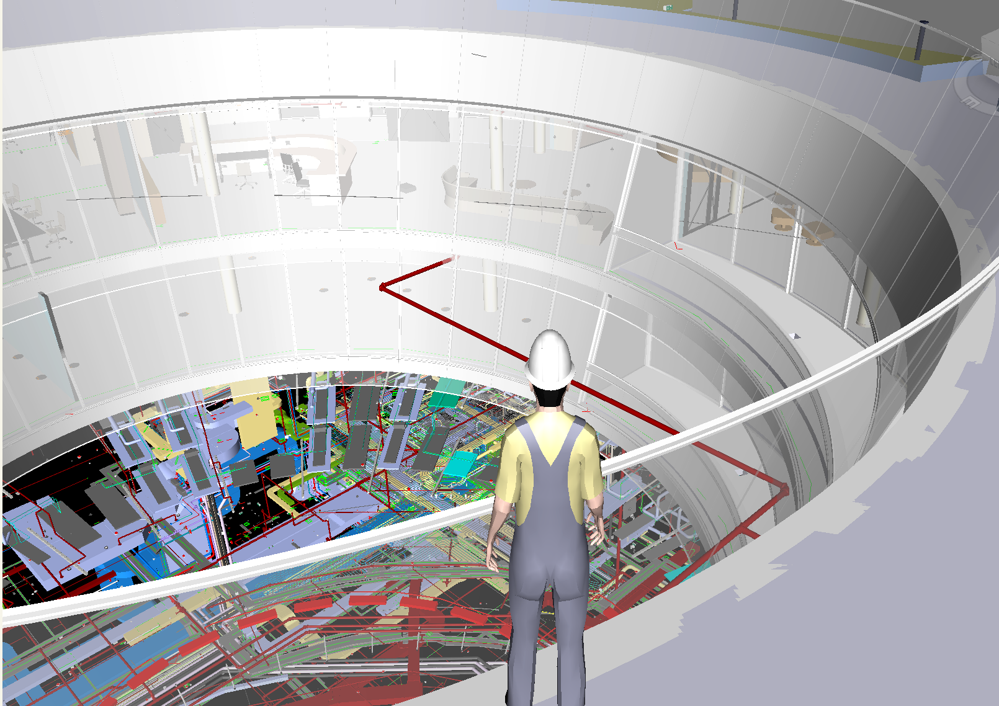
Fünf Fachmodelle.
Ein Modellstand.
Ein Modellstand.
Name
Mostafa Gomaa
Fachbereich
BIM-Koordinator TGA
Ort
Berlin
Blatt
10 / 17
Akt 03 — Das System
Der BIM-Standard
15 Seiten, 25 Tabellen, ISO 19650. Von mir verfasst und unternehmensweit eingeführt.
Plan-Benennung
| Blatt-Nr. | Projekt | Phase | Firma | System | Gewerk | Typ | Ebene | Rev |
|---|---|---|---|---|---|---|---|---|
| 3 | 4 | 1 | 3 | 3 | 5 | 2 | 4 | 2 |
| 001 | XXXX | 3 | INO | 410 | 411.02 | 3D | 01OG | 01 |
Familien-Benennung
| Firmencode | Gewerk | Kategorie | Typ | Beschreibung |
|---|---|---|---|---|
| INO | TGA | MECEQ | PIPCU | 150 mm … |
Gewerke-Kürzel
| Lüftung | Heizung / Kälte | Sanitär | Brandschutz | Elektro | MSR |
|---|---|---|---|---|---|
| TGL | TGK | TGS | TGF | TGE | TGG |
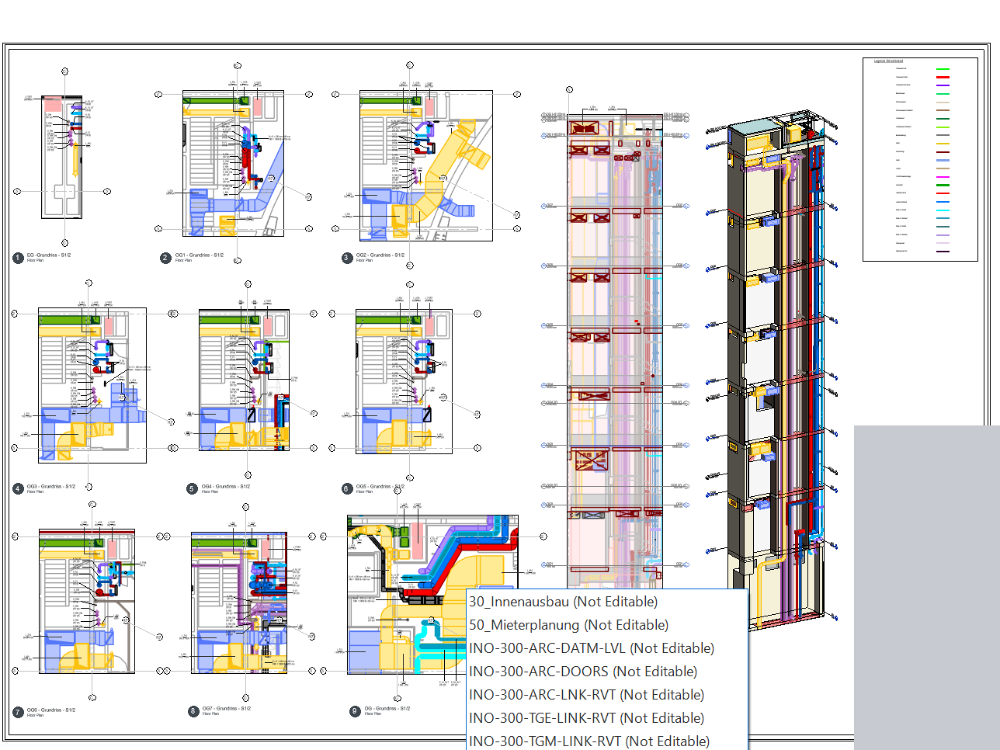
Ausgegebener Plan aus dem laufenden Projekt. Plannummer, Worksets und Systemfarben folgen genau den Regeln links.
42
Familienkategorien,
deutsch und englisch
deutsch und englisch
Der Standard regelt Benennung, Worksets, Systemfarben, Ansichtsvorlagen und Projektkoordinaten. Er gilt für alle internen Teams und externen Planungspartner.
Name
Mostafa Gomaa
Fachbereich
BIM-Koordinator TGA
Ort
Berlin
Blatt
11 / 17
Vorlage & Bibliothek
Der Standard steht nicht auf Papier — er steckt in der Revit-Vorlage.
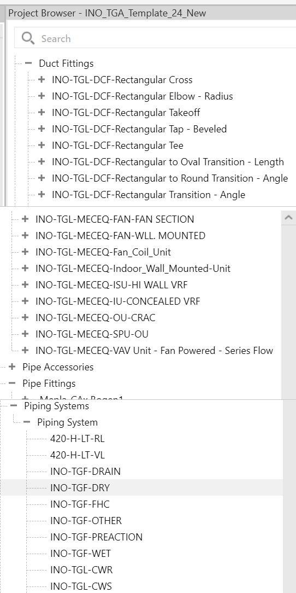
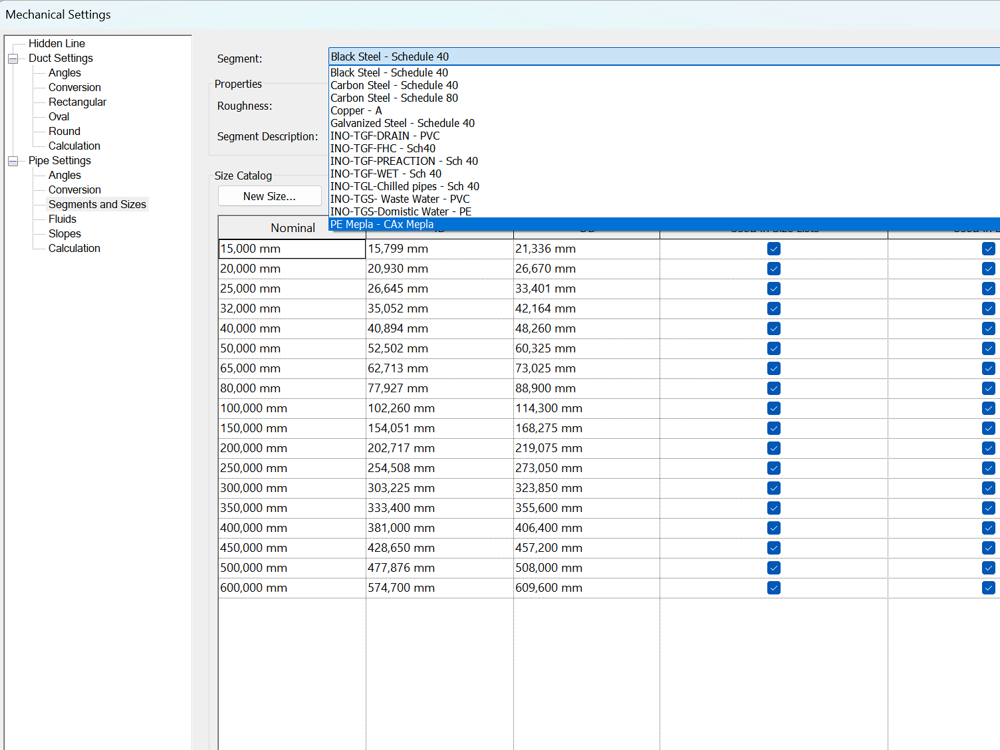
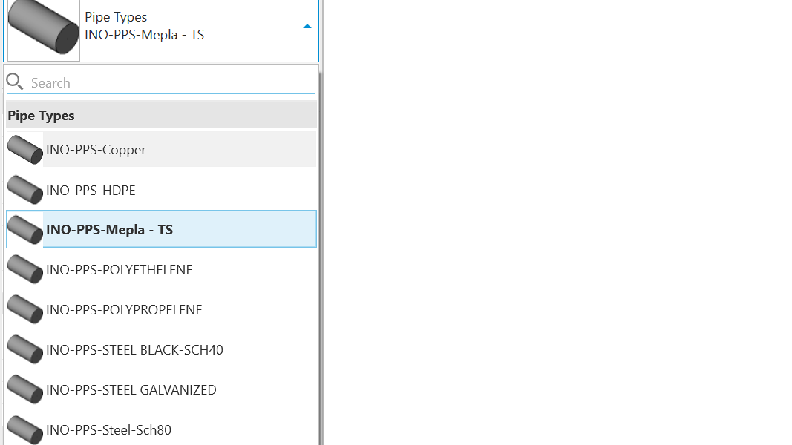
Rohrtypen, Rohrsegmente mit vollständigem Größenkatalog, Kanalformteile, Sprinklertypen und Systemfarben sind fest in der Vorlage hinterlegt. Jedes Element trägt die Benennung des Standards.
INO-TGL-DCF-…
INO-TGF-SPRK-…
INO-PPS-…
INO-TGS-410-TW
INO-TGF-SPRK-…
INO-PPS-…
INO-TGS-410-TW
8
Rohrtypen im Standard
20+
Rohrsysteme, farbcodiert
Projektbrowser der Vorlage.
Eigene Rohrsegmente je Gewerk mit Größenkatalog.
Name
Mostafa Gomaa
Fachbereich
BIM-Koordinator TGA
Ort
Berlin
Blatt
12 / 17
Parametrische Familien
Familien, die sich der Planung anpassen — nicht umgekehrt.
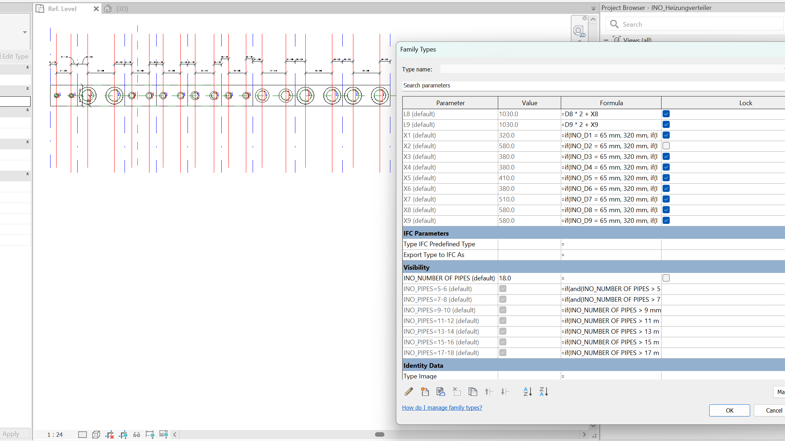
Sichtbarkeit über einen Parameter gesteuert — eine Familie deckt 5 bis 18 Rohre ab
Heizungsverteiler — die Anzahl der Abgänge steuert Geometrie und Sichtbarkeit über Formeln.
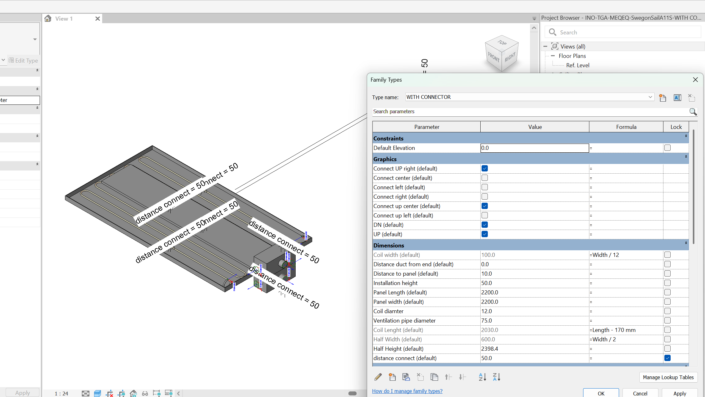
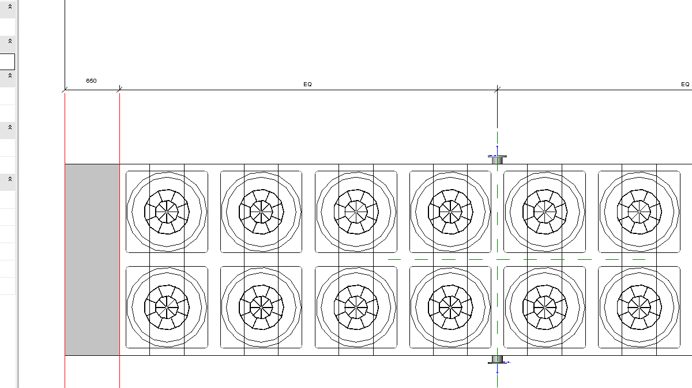
Anschlusskonfiguration mit Formelsteuerung.
Kältemaschine — Gerätefamilie.
Der Heizungsverteiler wird über die Anzahl der Abgänge gesteuert. Sichtbarkeit und Abstände folgen Formeln, nicht Handarbeit — eine Familie ersetzt sieben Varianten.
1
Familie statt
sieben Varianten
sieben Varianten
Alle Familien tragen die Benennung des Standards und die IFC-Parameter für den Datenaustausch.
Name
Mostafa Gomaa
Fachbereich
BIM-Koordinator TGA
Ort
Berlin
Blatt
13 / 17
Akt 05 — Hebel
Automatisierung — Werkzeuge
Eigene Revit-Add-ins, die wiederkehrende Handarbeit aus der Modellproduktion nehmen.
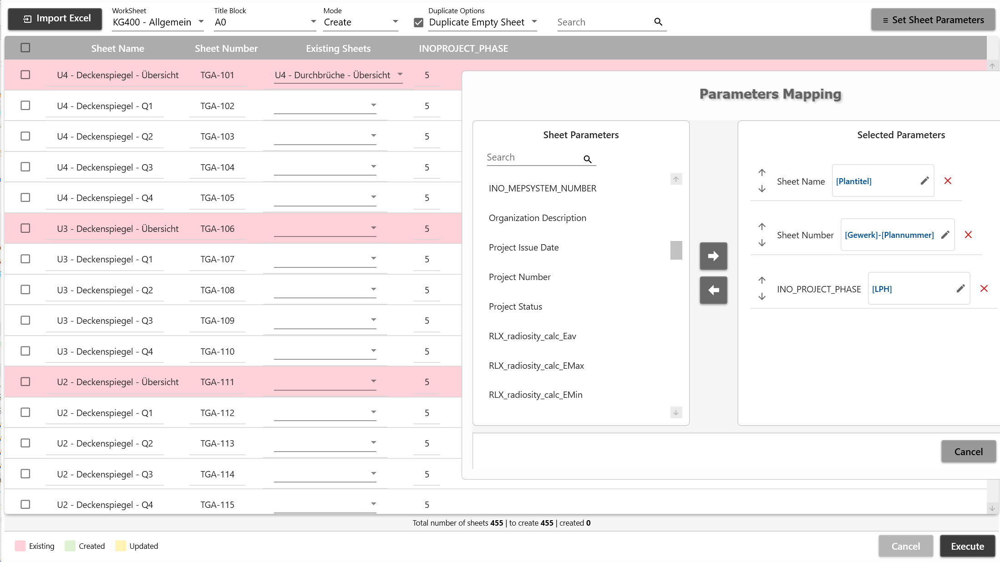
INO Sheets
Planerstellung
Erzeugt Pläne und Planparameter aus einer Excel-Liste.
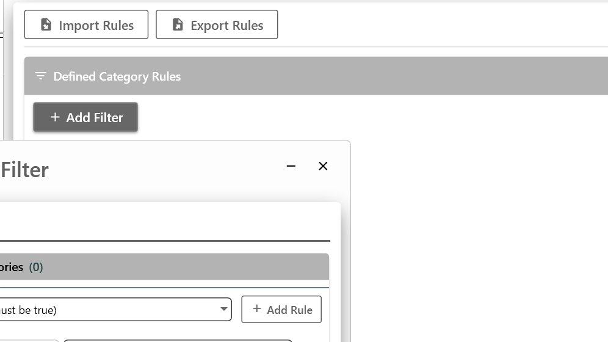
WorkSets Setter
Workset-Zuordnung
Weist Worksets regelbasiert je Kategorie und Filter zu.
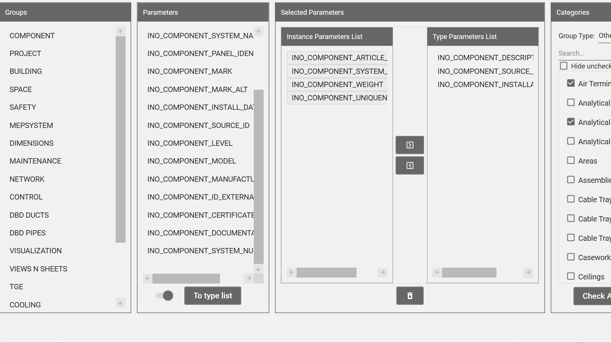
SharedToProject
Parameterübertragung
Überträgt Shared Parameters gruppiert als Projektparameter.
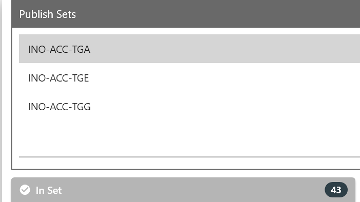
Publish Settings
Freigabesets
Speichert Freigabesets je Gewerk statt manueller Auswahl.
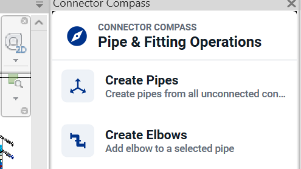
Connector Compass
Rohr- und Formteiloperationen
Erzeugt Rohre aus offenen Anschlüssen, setzt Bögen und richtet Bauteile aus.
Weitere Werkzeuge
CAD-Konverter — 2D-Symbole zu Revit-Familien
Clash-Report-Auswertung
Modell- und Projektstatistik
Clash-Report-Auswertung
Modell- und Projektstatistik
Name
Mostafa Gomaa
Fachbereich
BIM-Koordinator TGA
Ort
Berlin
Blatt
14 / 17
Automatisierung im BIM-Ablauf
Der Prozess bleibt derselbe. Die Werkzeuge setzen dort an, wo sich Arbeitsschritte wiederholen.
Unterstützt durch Automatisierung
Projektaufsatz
BAP, Koordinaten, Vorlage
Vorlage, Parameter, Worksets
Fachmodelle
Modellierung nach Standard
Planerstellung, Workset-Zuordnung
QA / QC
Modell- und Kollisionsprüfung
Auswertung der Prüfberichte
ACC-Koordination
Issues, Termine, Klärung
manuell
Freigabe
Geprüfte Stände je Gewerk
Freigabesets je Gewerk
Übergabe
IFC und Planlieferung
manuell
Automatisierung unterstützt den BIM-Prozess.
Ingenieurentscheidungen bleiben immer menschlich. Geprüft, abgewogen und freigegeben wird im Koordinationsprozess — die Werkzeuge sorgen nur dafür, dass die Wiederholarbeit davor nicht mehr anfällt.
Name
Mostafa Gomaa
Fachbereich
BIM-Koordinator TGA
Ort
Berlin
Blatt
15 / 17
Akt 06 — Nachweis
Frühere Projekte
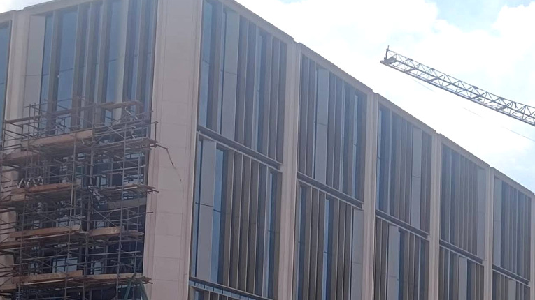
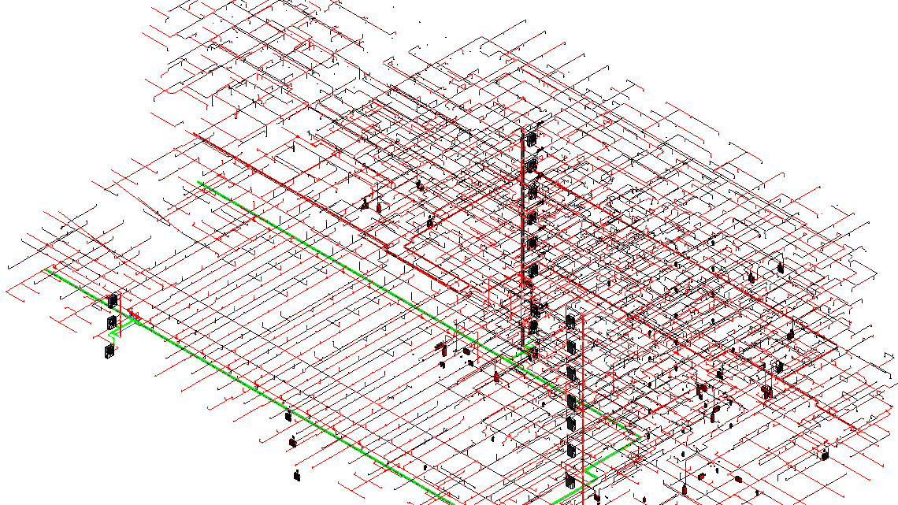
Bauausführung der Bankzentrale.
Sprinklernetz eines Regelgeschosses im Fachmodell.
Bankzentrale · Kairo
- Rolle
- BIM-Koordinator
Mechanische Modellierung, Brandschutz und Sanitär. Feuerlösch- und Trinkwasser-Pumpenräume, Kollisionsauflösung, Koordinationsschnitte sowie Ausführbarkeits- und LOD-400-Prüfung gegen die tatsächlich verbauten Materialien.
Software
Revit · Navisworks · AutoCAD
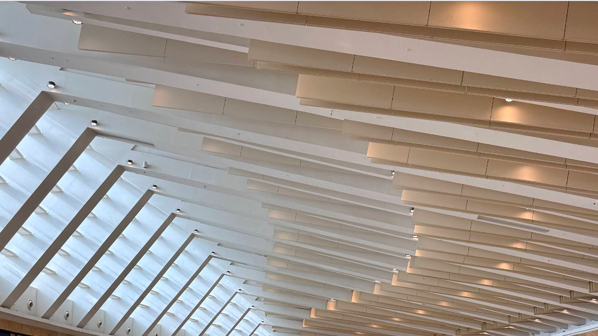
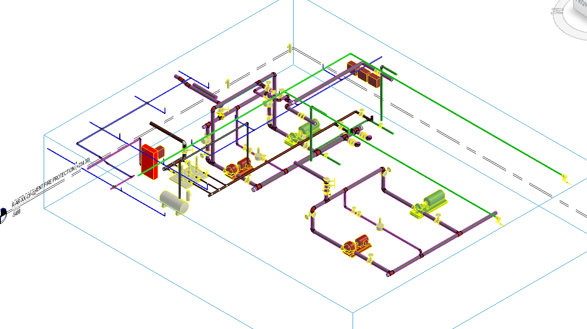
Atrium des fertiggestellten Einkaufszentrums.
Feuerlöschzentrale im Fachmodell.
Einkaufszentrum · Ägypten
- Rolle
- Fachplaner Brandschutz und Sanitär
Brandschutz- und Sanitärplanung mit hydraulischer Berechnung, Pumpenraumplanung, Revit-Modellierung und Ausführungsunterlagen.
Software
Revit · AutoCAD · Elite Software · Excel
Acht Jahre in TGA-Planung, Modellierung und Koordination — die technische Grundlage für praxisnahe BIM-Entscheidungen.
Name
Mostafa Gomaa
Fachbereich
BIM-Koordinator TGA
Ort
Berlin
Blatt
16 / 17
Qualifikation & Kontakt
- Ausbildung
- B.Sc. Maschinenbau — Mansoura University, Ägypten, 2018
- Weiterbildung
- BIM Application Development — Kaitech, 250 Stunden
Autodesk Authorized Academic Partner — BIM Application Development Diploma, über 100 Stunden - Schwerpunkte
- BIM-Koordination · Modellprüfung und QA/QC · ISO 19650 und BAP
Common Data Environment · Revit-Vorlagen und Standards · Revit-Automatisierung - Sprachen
- Arabisch (Muttersprache) · Deutsch · Englisch
Mostafa Gomaa
BIM-Koordinator TGA · Berlin
- Telefon +49 176 8757 3661
- E-Mail mostafa.gomaa.00000@gmail.com
- LinkedIn linkedin.com/in/mustafagomaa-95
- Standort Berlin, Deutschland
LinkedIn-Profil
Lassen Sie uns besprechen, wie ich Ihre BIM-Projekte unterstützen kann.
Alle Projektangaben anonymisiert · Abbildungen aus laufenden Projekten, vertrauliche Angaben geschwärzt
Name
Mostafa Gomaa
Fachbereich
BIM-Koordinator TGA
Ort
Berlin
Blatt
17 / 17